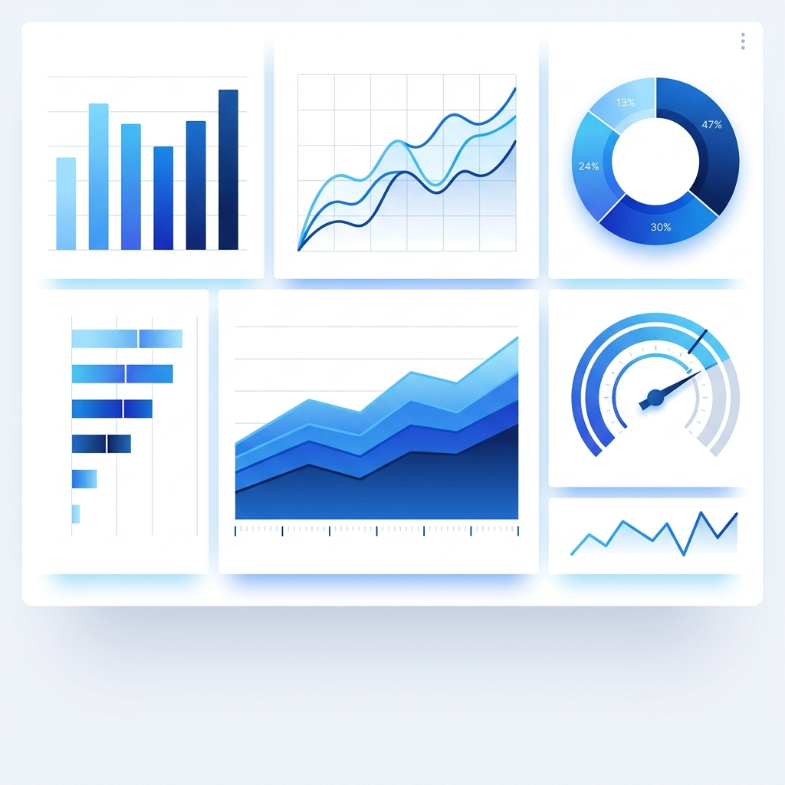
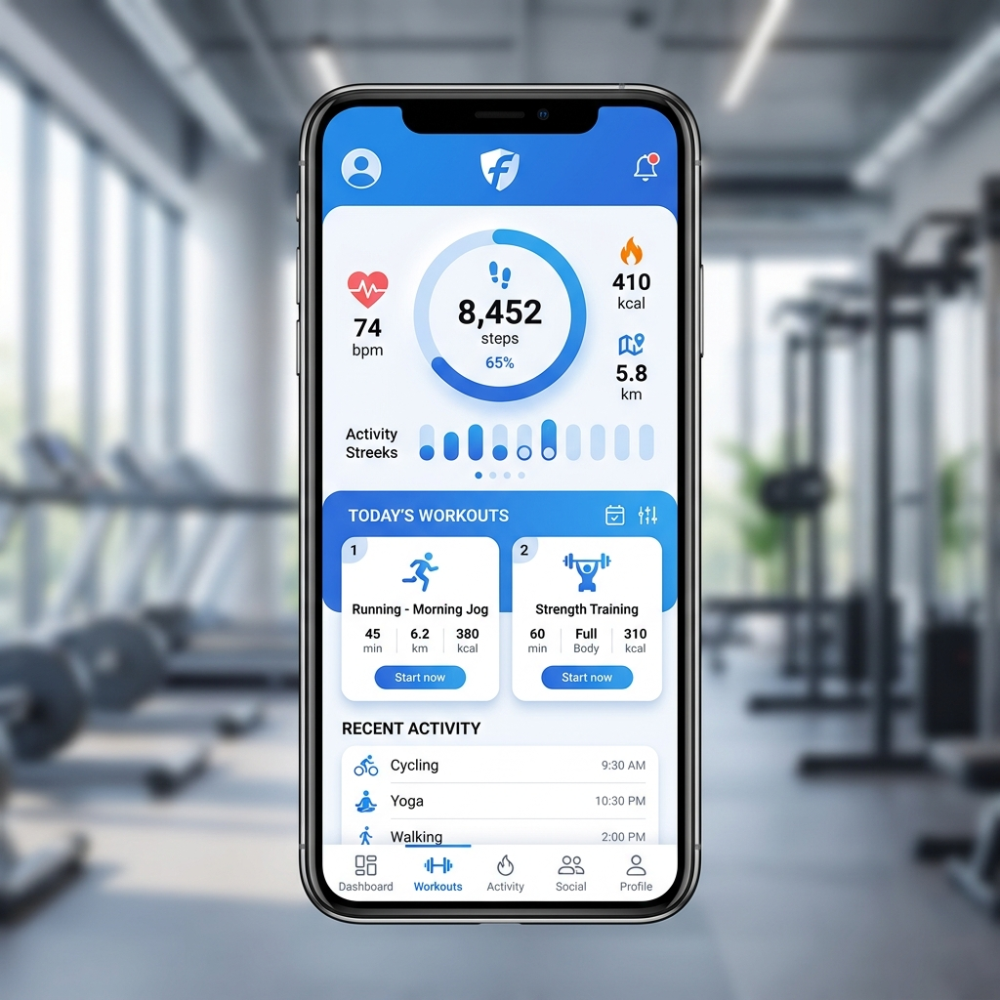

 查看詳情 → 資料視覺化 股市分析儀表板 整合多支股票的歷史數據， 以互動式圖表呈現最大回撤、績效比較等指標， 幫助投資者做出更明智的決策。 Python Streamlit Plotly Pandas
 查看詳情 → 應用程式 肌力訓練紀錄 App 專為健身愛好者設計的訓練紀錄工具， 包含動作資料庫、訓練計畫規劃與進度追蹤， 採用直觀的卡片式 UI 設計。 HTML CSS JavaScript LocalStorage
查看詳情 → 應用程式 個人品牌網站系統 即您正在瀏覽的網站！ 採用純 HTML/CSS/JavaScript 打造， 無框架依賴，載入速度極快，具備完整 SEO 優化。 HTML5 CSS3 Vanilla JS SEO